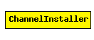

File: World/ChannelInstaller.ned
C++ definition: click here
Replaces channel objects in the network.
This module is a temporary solution until the NED infrastructure gets extended to accomodate channel classes.
The following diagram shows usage relationships between modules, networks and channels. Unresolved module (and channel) types are missing from the diagram. Click here to see the full picture.
| Name | Type | Description |
|---|---|---|
| channelClass | string | e.g. "ThruputMeteringChannel" |
| channelAttrs | string | params for the channel class, e.g. "format=N (U)" |
simple ChannelInstaller parameters: channelClass: string, // e.g. "ThruputMeteringChannel" channelAttrs: string; // params for the channel class, e.g. "format=N (U)" endsimple